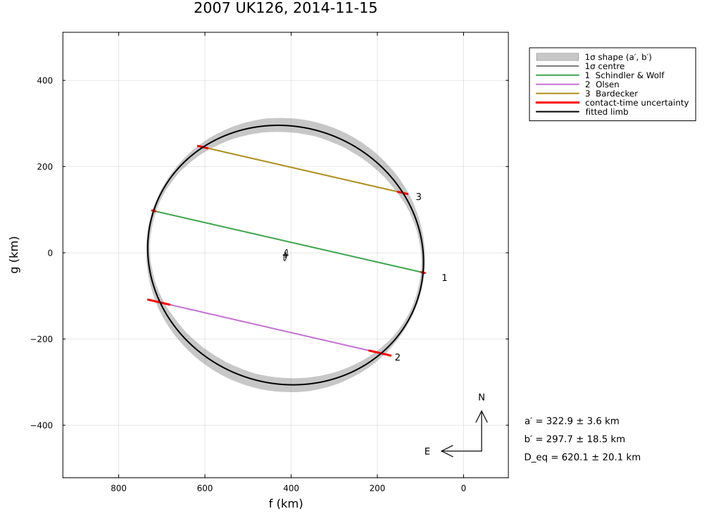
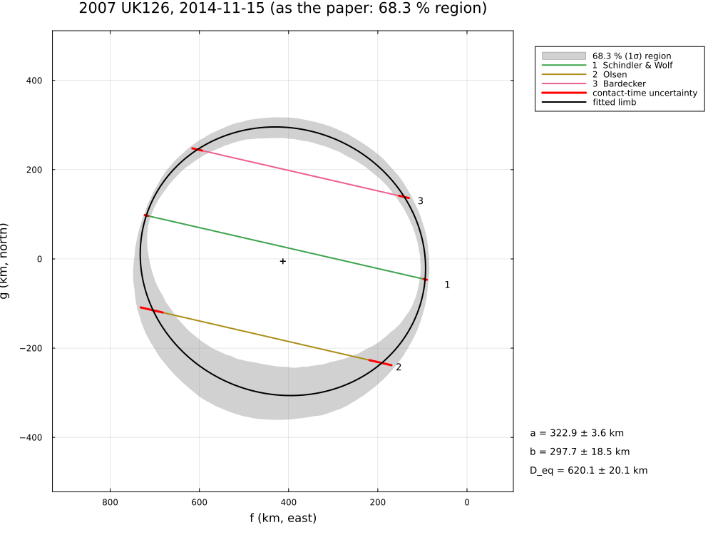
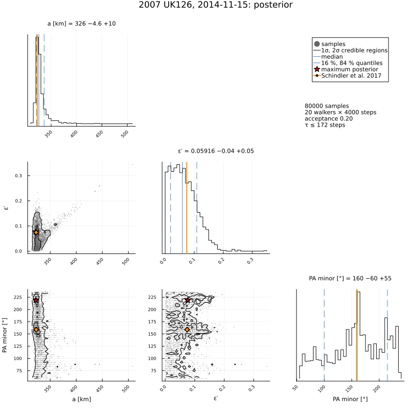

2007 UK126, 2014 November 15
The stellar occultation by (229762) 2007 UK126 on 2014 November 15, reduced from the published timings of Schindler et al. (2017), A&A 600, A12, "Results from a triple chord stellar occultation and far-infrared photometry of the trans-Neptunian object (229762) 2007 UK126": three GPS-timed chords.
The example covers the chord lengths, the ellipse, its covariance and posterior, the albedo and the shadow path. Five ellipse parameters from six contacts leave a single degree of freedom. The ellipse is reproduced (2a = 645.9 vs 645.8 km), but its published errors are about three times too small, and the posterior is strongly non-Gaussian.
The data are transcribed in examples/data/2007uk126_20141115.jl, with the stored JPL Horizons ephemeris, so the script runs offline:
julia --project=. examples/2007uk126_2014.jl [output_dir] (default: examples/output/2007uk126_2014)The code is not run when the manual is built. The output after each section is that of the last run of examples/2007uk126_2014.jl, stored in examples/output/2007uk126_2014/output.txt.
using Occultations, Random, Printf, Statistics
using Plots
import CairoMakie # saves the GeoMakie maps (Makie figures)
include(joinpath(@__DIR__, "standard_figures.jl"))
include(joinpath(@__DIR__, "data", "2007uk126_20141115.jl"))
out = length(ARGS) >= 1 ? ARGS[1] : mkpath(joinpath(@__DIR__, "output", "2007uk126_2014"))
rng = MersenneTwister(2014)
P = UK126_PAPER
q(x) = quantile(x, [0.15865525393145707, 0.5, 0.8413447460685429])
pm(x; d=1) = (v = q(x); Printf.format(Printf.Format("%.$(d)f -%.$(d)f +%.$(d)f"), v[2], v[2] - v[1], v[3] - v[2]))Event, geometry and chords (Table 2 in parentheses)
ev = uk126_event()
D = ev.ca.dist_km
@printf("distance %.3f au (%.3f), shadow velocity %.2f km/s\n", D / 1.495978707e8, P.distance_au, ev.ca.vel)
for c in ev.chords
tr = track(ev, c)
ti, te = c.contacts[1].time, c.contacts[2].time
f1, g1 = tr(ti - ev.tref); f2, g2 = tr(te - ev.tref)
@printf(" %-17s duration %.3f s (%.3f), chord %.1f km (%.1f ± %.1f)\n", c.name, te - ti, P.durations[c.name][1],
hypot(f2 - f1, g2 - g1), P.chords[c.name]...)
enddistance 42.573 au (42.572), shadow velocity 24.43 km/s
Schindler & Wolf duration 25.893 s (25.893), chord 641.2 km (641.0 ± 3.9)
Olsen duration 21.355 s (21.355), chord 526.1 km (525.9 ± 25.4)
Bardecker duration 19.219 s (19.219), chord 475.8 km (475.7 ± 11.2)Ellipse (Table 5: full axes; θ of the major axis from east towards north)
θ(r) = mod(-r[:position_angle][1], 180) # θ_El = −PA (minor axis from N towards E), mod 180°
row(label, r) = @printf("%-32s 2a = %6.1f ± %4.1f 2b = %6.1f ± %4.1f θ = %5.1f ± %4.1f° a/b = %.3f D_eq = %5.1f km χ²/dof = %s\n",
label, 2r[:equatorial_radius][1], 2r[:equatorial_radius][2], 2r[:semi_minor_axis][1],
2r[:semi_minor_axis][2], θ(r), r[:position_angle][2],
r[:equatorial_radius][1] / r[:semi_minor_axis][1], 2r[:equivalent_radius][1],
r.dof > 0 ? @sprintf("%.2f", reduced_chi2(r)) : "–")
@printf("%-32s 2a = %6.1f ± %4.1f 2b = %6.1f ± %4.1f θ = %5.1f ± %4.1f° a/b = %.3f\n", "published (error-in-variables)",
P.axis_major..., P.axis_minor..., P.theta..., P.axis_ratio[1])
rc = fit_limb(ev; residual=:chord, rng=rng)
rr = fit_limb(ev; residual=:radial, rng=rng)
row("residuals along the chords", rc)
row("radial residuals", rr)
println("Six contacts and five ellipse parameters leave one degree of freedom: the covariance is a")
println("local, Gaussian approximation. The posterior shows the actual (non-Gaussian) uncertainty:")published (error-in-variables) 2a = 645.8 ± 5.7 2b = 597.8 ± 12.7 θ = 21.2 ± 5.7° a/b = 1.080
residuals along the chords 2a = 645.9 ± 7.2 2b = 595.4 ± 36.9 θ = 20.7 ± 14.6° a/b = 1.085 D_eq = 620.1 km χ²/dof = 0.04
radial residuals 2a = 645.8 ± 8.2 2b = 595.3 ± 47.0 θ = 20.5 ± 19.2° a/b = 1.085 D_eq = 620.0 km χ²/dof = 0.03
Six contacts and five ellipse parameters leave one degree of freedom: the covariance is a
local, Gaussian approximation. The posterior shows the actual (non-Gaussian) uncertainty:Posterior
post = sample(rc; nsteps=6000, rng=rng)
S = samples(post)
col(n) = S[:, findfirst(==(n), post.names)]
A, ε = col(:equatorial_radius), col(:oblateness)
B = A .* (1 .- ε) # semi-minor axis
@printf("2a = %s km, 2b = %s km, θ = %s°, D_eq = %s km\n", pm(2 .* A), pm(2 .* B), pm(mod.(-col(:position_angle), 180)),
pm(2 .* sqrt.(A .* B)))
@printf("a/b = %s (paper %.3f ± %.3f)\n", pm(A ./ B; d=3), P.axis_ratio...)
# geometric albedo, Eq. (1) of the paper: p_V = 4·10^{0.4(H_sun − H)} (1 au)² / (a_El b_El), full axes
pV = [4 * 10^(0.4 * (-26.78 - (P.H_V[1] + P.H_V[2] * randn(rng)))) * 1.49598e8^2 / (4 * a * b) for (a, b) in zip(A, B)]
@printf("geometric albedo %s %% (paper %.1f ± %.1f %%)\n", pm(100 .* pV), (100 .* P.albedo)...)2a = 652.0 -9.3 +20.6 km, 2b = 623.0 -39.2 +22.4 km, θ = 40.0 -24.0 +72.0°, D_eq = 636.7 -21.8 +20.3 km
a/b = 1.063 -0.044 +0.059 (paper 1.080 ± 0.025)
geometric albedo 14.3 -1.1 +1.2 % (paper 15.0 ± 1.6 %)Figures
savefig(plot(ev; title="2007 UK126, 2014-11-15: chords", size=(1000, 750)), joinpath(out, "2007uk126_chords.png"))
savefig(cornerplot(post; vars=[:equatorial_radius, :oblateness, :position_angle],
axislabels=Dict(:equatorial_radius => "a [km]", :oblateness => "ε′", :position_angle => "PA minor [°]"),
truths=Dict(:equatorial_radius => P.axis_major[1] / 2, :oblateness => 1 - P.axis_minor[1] / P.axis_major[1],
:position_angle => mod(-P.theta[1], 180)), truth_label="Schindler et al. 2017"),
joinpath(out, "2007uk126_corner.png"))
# the standard figures: limb fits (default, 68.3 % region, as the paper), posterior, maps (prediction,
# post-fit, comparison) and the globe
standard_figures("2007uk126", rc; out=out, posterior=post, paper=(uncertainty=:region,),
projection="+proj=laea +lon_0=-105 +lat_0=38", limits=(-128, -80, 28, 50), window=600, marks=30)
println("figures written to ", out)The limb fit, and the 68.3 % region of whole limbs (the paper's figure shows a region of this kind):


The posterior of the ellipse, with the published values: one degree of freedom leaves it far from Gaussian.

The results are discussed in Comparison with published reductions.